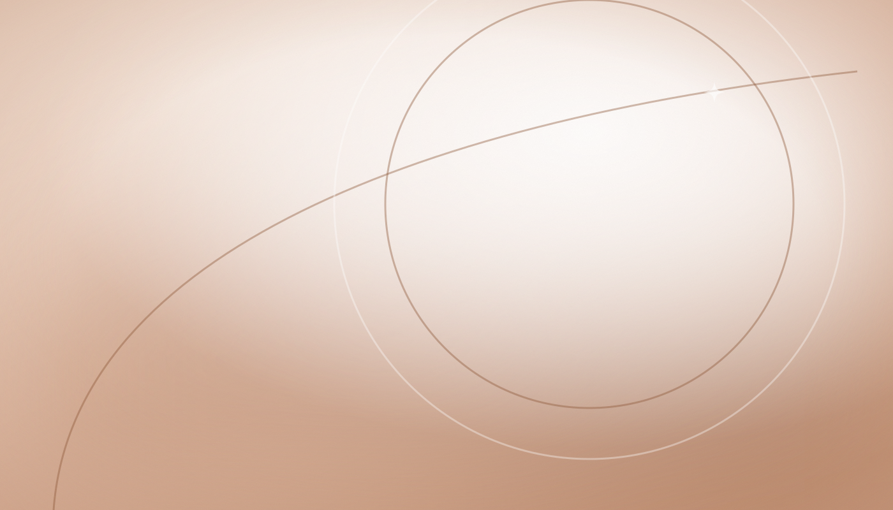
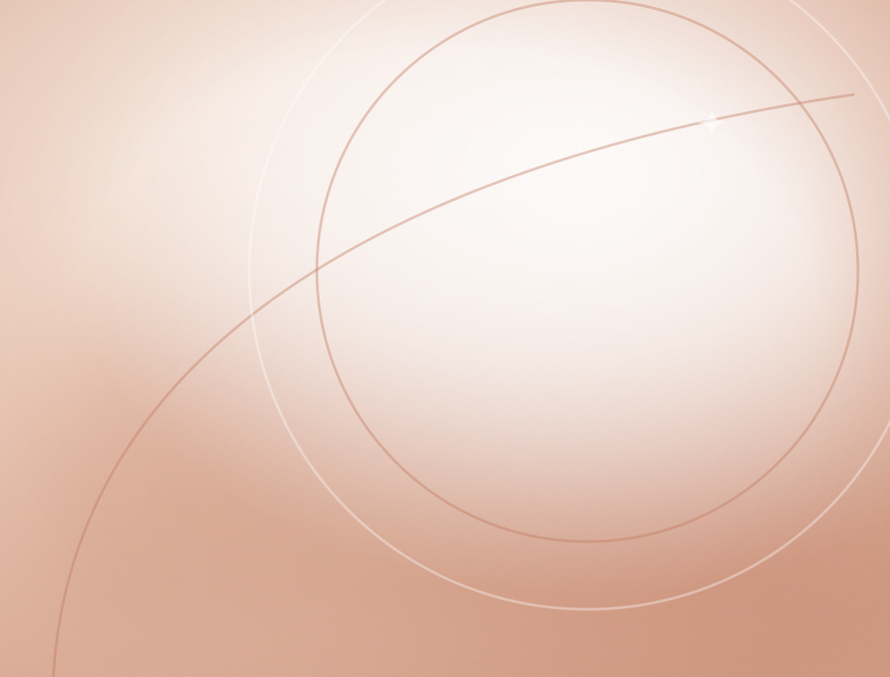

Detailed Consultation
An unhurried conversation covering your concern, its history and how it affects daily life.
Our Services
Every treatment below begins the same way — with a consultation. What is recommended, how many sessions are planned and how they are spaced all depend on your individual clinical assessment.

01 · Skin
Clinical and aesthetic skin care selected for your skin type, sensitivity and concern — with realistic timelines and structured aftercare at every step.
Suitability for any procedure is confirmed during consultation. Results vary from person to person.

Laser-based hair reduction designed to help reduce unwanted hair over a planned course of sessions. The number of sessions, spacing and settings are decided after assessing your skin type, hair type and the area being treated.
Suitability and expected outcomes are discussed before the first session.
A laser used in the management of selected pigmentation and skin tone concerns. Whether it is appropriate for you, and how many sittings may be planned, depends on skin type and clinical assessment.
Used for the management of the concerns listed above; response varies between individuals.
Medical-grade peels chosen by strength and formulation to suit your skin — used to support texture, uneven tone, congestion and dullness. Peels are usually planned as a short series with home care in between.
Peel selection and depth are decided after skin assessment and patch consideration.
A multi-step facial that cleanses, gently exfoliates and infuses hydrating serums. Often chosen before events, or as regular maintenance for dull, dehydrated or congested skin.
A carbon-based laser facial used to support oil control, refine the look of enlarged pores and give skin an immediate polished finish. Commonly planned in a series for oily or congestion-prone skin.
A gentle in-clinic facial used as supportive care for breakout-prone skin, often combined with a cleansing routine and appropriate home care.
A rejuvenation procedure that combines controlled micro-injury of the skin with the patient's own platelet-rich plasma. Offered in selected cases, subject to clinical evaluation and suitability.
A treatment used to give the skin a smoother, more even-looking finish. Usually planned as a short series; the effect is temporary and maintenance sessions may be advised.
Controlled micro-needling used to support skin rejuvenation, texture and the appearance of acne scars. The same technique is also used on the scalp as part of hair growth support.
Micro-infusions delivered into the superficial layers of the skin or scalp, chosen according to the concern being addressed and planned over a set number of sittings.
Gentle mechanical exfoliation used to smooth surface texture and brighten a dull complexion. Frequently chosen as a refresh before events or as part of a longer skin plan.
A layered hydration and glow protocol designed to leave the skin looking refined, well-hydrated and luminous. Popular as pre-event preparation and as maintenance care.
Active breakouts and scarring are approached in stages — settling the active phase first, then working on marks and texture. Plans may combine in-clinic procedures, home care and lifestyle guidance, and are reviewed at follow-up.
Pigmentation has many causes, so care begins with understanding the pattern and triggers. Depending on assessment, a plan may include laser sessions, peels, topical care and sun protection guidance.
Pigmentation concerns often need patience and maintenance; response varies.
In-clinic hydration paired with a simplified home routine, designed to support a comfortable, well-functioning skin barrier for dry and dehydrated skin.
Assessment and removal options for selected benign lesions, subject to clinical evaluation. Any lesion that requires further medical opinion will be referred appropriately.
02 · Hair
Hair concerns are reviewed alongside scalp health, routine and nutrition — because what happens on the scalp is rarely the whole story.
Treatments are used in selected cases to support hair growth and help manage hair fall, based on individual assessment.
A procedure using the patient's own platelet-rich plasma, used in selected cases to support hair growth and help manage hair fall. Sessions are planned in a course and reviewed as you go.
Suitability is decided after individual assessment; response varies from person to person.
A growth-factor concentrate prepared from the patient's own blood sample, used in selected cases as part of a hair care plan. Whether GFC or PRP is more appropriate is discussed during consultation.
Controlled micro-needling of the scalp, sometimes combined with topical or infused preparations, used as supportive care within a wider hair plan.
Micro-infusions delivered into the scalp, selected according to your assessment and usually planned across a defined number of sittings.
Hair fall is assessed in context — pattern, duration, scalp condition, routine, nutrition and general health. The plan follows from that assessment rather than a fixed package, and may include investigations where appropriate.
A combination approach — in-clinic sessions, appropriate topical care and guidance on daily habits — designed to support hair growth over a realistic timeline.
Care for a flaky, oily, itchy or sensitive scalp, including in-clinic treatment and a simplified wash-and-care routine you can actually keep up with.
Practical, individualised nutrition guidance built around your food preferences and routine, offered as part of hair care because in-clinic work is only one half of the picture.
03 · Homoeopathy
Individualised care that begins with understanding you.
A homoeopathic consultation at GLANZ is unhurried by design. Rather than looking at a single complaint in isolation, the consultation considers your overall symptom picture, constitution, temperament, routine and general wellbeing — and the plan is built from there, case by case.
An unhurried conversation covering your concern, its history and how it affects daily life.
Symptoms are recorded in detail, including patterns, triggers and what makes them better or worse.
Temperament, sensitivities and general tendencies are considered alongside the presenting complaint.
Sleep, routine, food habits and stress are discussed, since they shape how you feel day to day.
A case-based plan is prepared for you, with the reasoning explained in plain language.
Progress is reviewed at planned intervals and the approach is adjusted based on your response.
04 · Bridal & Groom
Healthy, radiant skin and healthy-looking hair before the big day — planned with enough time to do it properly.
Plans are built backwards from your wedding date, with sessions spaced to suit your skin and your calendar. The earlier we begin, the gentler the plan can be.
For the Bride
Staged skin preparation building towards an even, well-hydrated, camera-ready finish.
Planned after consultation · Timeline built around your date
For the Groom
A straightforward plan for clearer, calmer skin and a neat, well-cared-for finish.
Planned after consultation · Timeline built around your date
For Both
Hair care and diet guidance running alongside skin preparation in the months before.
Planned after consultation · Timeline built around your date
Next Step
Tell us your concern and we will guide you to the right consultation — skin, hair or homoeopathic.